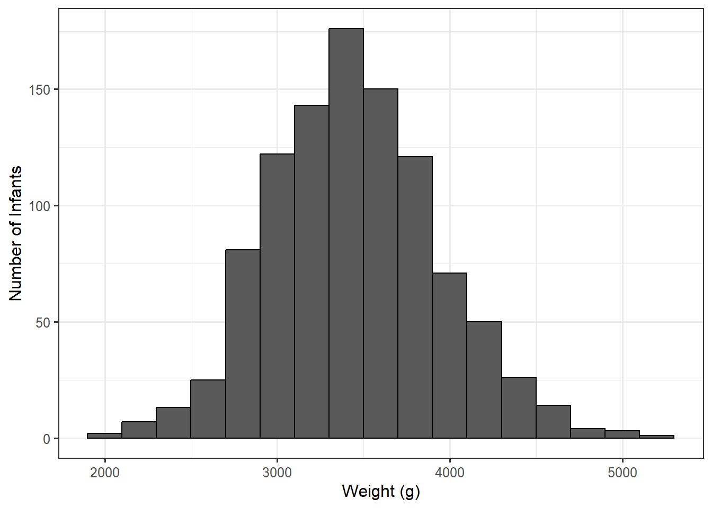
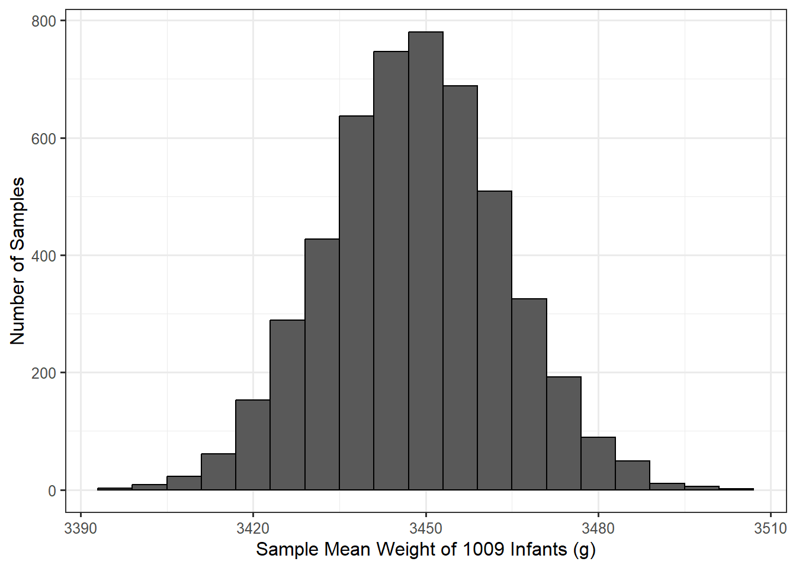

11 Estimating with Confidence a Single Mean
Consider the Birth Weight Case Study described in Chapter 9. In the previous chapter, we introduced the following model for how birth weights for infants are generated:
\[(\text{Birth Weight})_i = \mu + \varepsilon_i\]
where \(\mu\) represents the average birth weight of infants born in North Carolina. We also discussed imposing two conditions on the distribution of the random error terms:
- The error in the birth weight for one infant is independent of the error in the birth weight for any other infant.
- The errors in the birth weight for infants are identically distributed.
Within this model for the data generating process, \(\mu\) is an unknown parameter of interest. Consider the following research goal associated with this parameter:
On average, what is the birth weight of an infant born in North Carolina?
We can construct a point estimate of the parameter \(\mu\) with the average birth weight of infants in our sample: 3448.26 g. The data is graphically summarized in Figure 11.1.
In order to construct an estimate of \(\mu\) which incorporates the variability in the sample mean, we must model the sampling distribution of our estimate. The bootstrap procedure for this case would be
- Randomly sample, with replacement, 1009 records from the original sample.
- For this bootstrap resample, compute the mean birth weight and retain this value.
- Repeat steps 1 and 2 many (say 5000) times.
This process is illustrated in Table 11.1. Each row represents the birth weights for a single resample taken with replacement from the original data. The final column is the computed (and retained), sample mean from each resample (the bootstrap statistic).
| Value 1 | Value 2 | Value 3 | Value 1007 | Value 1008 | Value 1009 | Boostrap Mean | |
|---|---|---|---|---|---|---|---|
| 3345 | 3572 | 3572 | ... | 3827 | 3827 | 3119 | 3461.89 |
| 3629 | 2892 | 3827 | ... | 4111 | 3374 | 2948 | 3476.69 |
| 2495 | 3686 | 3827 | ... | 3289 | 3544 | 3487 | 3428.90 |
| 3856 | 3430 | 3771 | ... | 3487 | 3742 | 2665 | 3436.20 |
| 3430 | 3119 | 4479 | ... | 3686 | 3090 | 3005 | 3451.09 |
| 3289 | 3459 | 3827 | ... | 3600 | 3856 | 3260 | 3473.89 |
| 2863 | 3345 | 3232 | ... | 3345 | 3544 | 2948 | 3427.89 |
| 3289 | 4026 | 3856 | ... | 4338 | 3771 | 3714 | 3435.78 |
| 3175 | 3544 | 3771 | ... | 3572 | 3515 | 3005 | 3419.37 |
| 3260 | 3771 | 3742 | ... | 3572 | 4054 | 3033 | 3447.77 |
A plot of the resulting bootstrap sample means is shown in Figure 11.2. Notice that the x-axis is different from that of Figure 11.1. While a graphical summary of the raw data is summarizing the weight of individual infants, the model for the sampling distribution is summarizing the statistic we compute in various resamples of the same size. In Figure 11.2, we are not keeping track of individual infant weights but average weights for collections of 1009 infants.

Using this model for the sampling distribution, we can then grab the middle 95% of values in order to construct a confidence interval for the parameter of interest. This results in a 95% confidence interval of (3418.73, 3479). Based on this confidence interval, the data is consistent with the birth weight of infants in North Carolina, on average, being between 3418.73 and 3479; that is, these are the reasonable values of the mean birth weight.
Notice that we are able to narrow down the reasonable values of the parameter to a relatively small interval (a difference of about 60 grams). This is not because all babies in North Carolina have an extremely similar birth weight. It is because we have a relatively large sample, allowing us to have high confidence in our estimate of the average birth weight of an infant. The confidence interval does not tell us where we expect an individual infant’s birth weight to fall; it only communicates what we are estimating the average birth weight of all infants to be based on our observed sample.
Also, notice how much narrower the model for the sampling distribution is compared to the distribution of the variable in the sample. Remember, statistics have less variability than individual values. This also illustrates why a confidence interval could never describe the fraction of values in the population which fall within a certain range — the variability is not comparable because a sampling distribution has a different x-axis than the distribution of the population or sample.